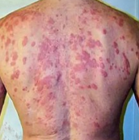
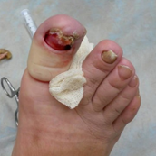
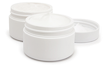
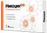

Грибок – это опасная инфекция
которая угрожает вам и вашим близким,
ведь с каждым днем грибок приводит к:
1

Сложным
формам
аллергии
формам
аллергии
2

Потере ногтя
и ампутации
пальца
и ампутации
пальца
3
Тяжелому
поражению
внутренних
органов
поражению
внутренних
органов
Может появится сильная реакция
на на привычную пищу, одежду,
средства гигиены
на на привычную пищу, одежду,
средства гигиены
После полного разрушения ногтя
грибок распространяется на палец,
что приводит к его ампутации
грибок распространяется на палец,
что приводит к его ампутации
Может привести к повреждениям
мозга, слепоте, отказу печени, почек
и сердца
мозга, слепоте, отказу печени, почек
и сердца
Статистика: каждые 60 секунд врачи диагностируют опасные поражения внутренних органов,
вызванные грибком, у 1-го пациент
вызванные грибком, у 1-го пациент
Почему большинство средств против грибка
малоэффективны
малоэффективны
Чудо-средства
Обещают, что избавят от грибка
меньше, чем за месяц, хотя
это невозможно.
меньше, чем за месяц, хотя
это невозможно.
Но
Ноготь – это роговой слой кожи.
Он не имеет живых клеток. Часть
ногтя, которая уже поражена
грибком, не может выздороветь
до полного его отрастания.
Единственный способ вылечить
грибок – подавлять его
распространение все время,
пока ноготь не отрастет заново.
Для этого требуется 4-6 месяцев.
Он не имеет живых клеток. Часть
ногтя, которая уже поражена
грибком, не может выздороветь
до полного его отрастания.
Единственный способ вылечить
грибок – подавлять его
распространение все время,
пока ноготь не отрастет заново.
Для этого требуется 4-6 месяцев.
Наружные средства
Способны устранить внешние
проявления грибка.
проявления грибка.
Но
Очаг заражения находится
под ногтевой пластиной, а наружные
средства не способны его достичь -
они действуют только на на верхнем
слое ногтя, поэтому не способны
избавить от грибка. Для повышения
их эффективности рекомендуется
спиливать ноготь полностью,
но это больно, некрасиво
и совершенно не дает гарантий
выздоровления.
под ногтевой пластиной, а наружные
средства не способны его достичь -
они действуют только на на верхнем
слое ногтя, поэтому не способны
избавить от грибка. Для повышения
их эффективности рекомендуется
спиливать ноготь полностью,
но это больно, некрасиво
и совершенно не дает гарантий
выздоровления.
Внутренние средства
Убивают грибковую инфекцию
в организме.
в организме.
Но
Могут подействовать только
при длительном использовании
(6 - 8 месяцев). За это время
внутренние средства в 93%
случаев наносят серьезный
ущерб печени, вызывают сыпь,
отеки, диарею, рвоту. К тому же,
каждое средство эффективно
только против одной группы
грибка из 4000 видов.
при длительном использовании
(6 - 8 месяцев). За это время
внутренние средства в 93%
случаев наносят серьезный
ущерб печени, вызывают сыпь,
отеки, диарею, рвоту. К тому же,
каждое средство эффективно
только против одной группы
грибка из 4000 видов.
!
ВЫВОД:
Даже если вы используете наружные и внутренние
средства одновременно, это не гарантирует избавления от грибка: они могут конфликтовать
между собой по составу и блокировать действие друг друга или быть неэффективными
против вашего типа грибка.
Почему таблетки Микоцин от грибка
так эффективны?
Другие средства не дают полную защиту от грибковых инфекций и могут быть опасны

Не лечат грибок, потому
что не проникают в ногтевую пластину. Только временно избавляют от симптомов инфекций. Могут вызвать сильную аллергию
и раздражения на коже.
Кремы и мази
Народные методы
Помогают только в редких случаях. Могут причинить вред коже
и ногтям. Не предотвращают повторные заражения грибком.

Действуют против всех видов грибков.
Быстро снимают неприятные симптомы и уничтожают инфекцию изнутри вне зависимости
от области заражения грибком. Надолго защищают от повторных заражений.
Таблетки
Зачем лечить сложнее, дольше и дороже, если есть Микоцин?